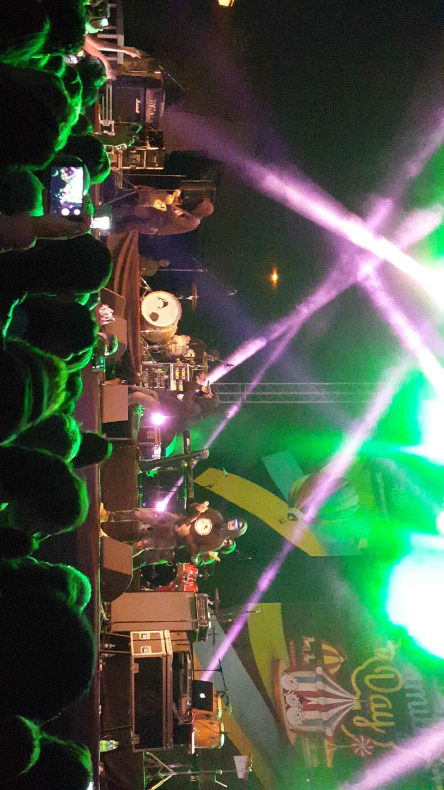

Pentru mine Carla’s Dreams a fost probabil prima trupa la care eu mă regăseam aproape tot timpul în versurile lor. M-au cuprins pentru prima dată undeva prin 2014 cu melodia Hobson’s Choice (mai degraba cu versurile acesteia, ei susțin că nu este o melodie ci o scurtă poezie). După asta încet, încet am început să îi îndrăgesc tot mai mult. În momentul de față am foarte multe playlist-uri în care ei apar cu multe melodii. Melodia din videoclip este ultima lansată de ei și din punctul meu de vedere este cea mai bună melodie lansată de aceștia, emoțiile pe care solistul trupei le transmite sunt incredibil de puternice și se resimt după fiecare concert al lor, dar nu numai.